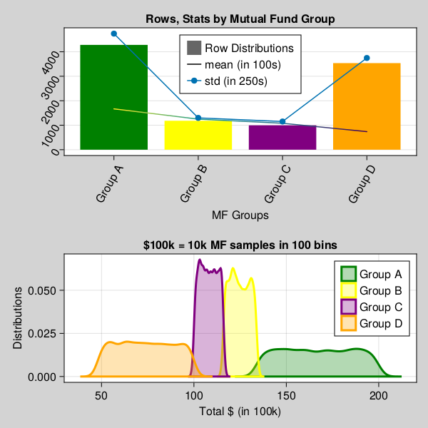
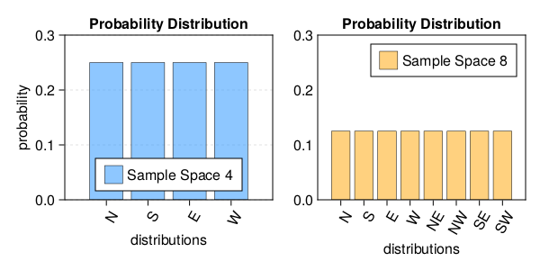

Probability & Statistics
So far, we have seen examples of simple, compound interest certificate deposit types. Now let's dig in deeper and move onto another type of deposit types, i.e. Mutual Funds, stocks, options equity etc.
Before we jump on to more advance Machine learning training, model and predictive analytics, let's spend time on statistical analysis and visualizing probability distributions of data first.
Above analysis is the key to machine learning and predictive analytics. Understanding below statistical concepts lay strong foundations for ML/DL modeling later on.
In this section, we will focus on performing Univariate analysis on Mutual fund data, as you can see in below data sample, that rate type, compound interest type does't impact MF performance, in this dataset, outcome depends on only one variable, "Group Type".
Once we get a hang of analyzing data on one variable, later we will introduce more variables like MF Type, contents, market type etc. Then in later section, we will train our neural network on multiple inputs.
In this example below, we will work on datasets from GeneralLedger.jl package in following steps.
- first draw one million data samples from GeneralLedger.jl package
- groupby data by deposit type
- filter data to include only Mutual Funds
using GeneralLedger, DataFrames, Statistics;
sampleSize = 1000000;
df = GeneralLedger.getSampleDepositsData(sampleSize);
subset!(df, :deposit => x -> contains.(x, "MF"));
dfG = groupby(df, [:rate]);
combine(dfG, nrow, proprow, groupindices, :Total => mean => :mean, :Total => std => :std);
# dfA = subset(df, :rate => x -> isequal.(x, "Group A"));
show(first(dfA,5)) # show first 5 rows
describe(dfA.Total) # describe stats
dfC = combine(dfG, nrow, proprow, groupindices, :Total => mean => :mean, :Total => std => :std);
show(first(dfC,5)) # show first 5 rows| deposit | amount | ROI | time | rate | compound | Interest | Total |
|---|---|---|---|---|---|---|---|
| MF-1 | 100000.0 | 0.0 | 60.0 | Group D | 1.0 | -43000.0 | 57000.0 |
| MF-2 | 100000.0 | 0.0 | 60.0 | Group A | 1.0 | 73000.0 | 173000.0 |
| MF-3 | 100000.0 | 0.0 | 60.0 | Group B | 1.0 | 21000.0 | 121000.0 |
| MF-4 | 100000.0 | 0.0 | 60.0 | Group D | 1.0 | -11000.0 | 89000.0 |
| MF-5 | 100000.0 | 0.0 | 60.0 | Group A | 1.0 | 87000.0 | 187000.0 |
| MF-6 | 100000.0 | 0.0 | 60.0 | Group D | 1.0 | -9000.0 | 91000.0 |
| MF-7 | 100000.0 | 0.0 | 60.0 | Group D | 1.0 | -47000.0 | 53000.0 |
| MF-8 | 100000.0 | 0.0 | 60.0 | Group D | 1.0 | -13000.0 | 87000.0 |
| MF-9 | 100000.0 | 0.0 | 60.0 | Group D | 1.0 | -35000.0 | 65000.0 |
| MF-10 | 100000.0 | 0.0 | 60.0 | Group A | 1.0 | 59000.0 | 159000.0 |
- as you can see, above data set is divided in 4 groups and each group has different type of outcomes.
- we will assume, these groups have further characteristics, which lead them to produce outcome in certain ranges.
- for example, Group A invests in certain types of equities which performed better or worse than others.
- however, with in a group, outcome are somewhat consistent (like in certain range).
- abnormal distribution with in one certain group is another topic for detail analysis.
- in later sections, we will only focus on doing analytics at one group level.
- let's visualize groups altogether.

as you can see in above graphs, Group A has largest population and has greatest means as well. Meaning, given 100k investment, overall ROI can be anywhere between 120-180k. Standard deviation in results are very high as range 120-180 on 100k original amount is very wide.
Similarly, Group B, Group C follow Group A in ROI. Group D has second largest population but is worse performing, and most of the time, ROI is less then 100k, which is under performing and losing investment anywhere from 40-50k.
Probability and Distributions
Let's first review basic concepts of Probability and Statistical distributions fundamentals and then we will apply those to our Finance dataset.
what is a statistical data probability distribution anyway?
in simple english, we tend to represent a set of data by a representative value which would approximately define the entire collection. This representative value is called the measure of central tendency, and the name suggests that it is a value around which the data is centred. This central tendency is often measures in terms like mean, median and mode etc..
For example, give a set of 100k Mutual Fund or Stock prices results, we want to have a general idea of about how each Mutual Fund or stock prices is performing in over all market conditions.
And given, how data is distributed across central tendency is defined as Distributions. Before we start looking at different distributions types like Normal | Gaussian, Poisson, Exponential. Let's understand basic of probability and few probability distribution functions.
Probability and Distributions help us understand general data tendencies in statistical analysis. Let's dig in some details to learn from examples.
If you are wondering, why we even care of learning probability, statistics, algebra and calculus functions for the sake of Finance Analytics. It's because building AI, is all about using mathematics to find statistical association to rationally predict outcome of an event given a set of inputs, than casual reasoning.
As we progress, we will see, how learning statistical associations and using calculus for automation in small steps, lead to performing statistical tasks, automate predictive analytics, which are fast improved fact based statistical association rather than casual reasoning, and often outperforms human intuitive analytics.
Probability
Concept: A probability event is defined as set of outcomes of an experiment. In simpler words, Probability is likelihood of occurrence of an event.
Application: As stated earlier, given our dataset, objective is to predict ROI given certain amount invested. So in terms of probability, We may want to use Probability or likelihood of best possible return from given amount invested in certain group/category.
Sample space
Concept: All set of possible set of outcomes of an experiment is the sample space.
let's assume, given there are 4 possible directions ($North$, $South$, $East$, $West$).
- Probability of person walking in North Direction is
1/4. Given Sample space ($North$, $South$, $East$, $West$). - Probability of person walking in $North$(ish) Direction is
3/8. Given Sample space is(N, NE, NW, S, SE, SW, E, W).
Determining statistical probability accurately depends on context and sample space.

Application: As seen in above examples, We can apply similar concepts in our given finance data set. For example, given outcome ROI, which group one Mutual Fund belongs to, and further, what is the likelihood of maximum profit given stocks in included in Fund.
Keep in mind, in above examples, Sample space and possible outcomes are in finite in numbers and hence are considered as discrete probability functions. Later sections, we will see continuous probability distributions which often have infinite outcomes.
Probability axioms
Concepts:
- The probability of occurrence of any event lies between 0 and 1. $P(X) \in (0,1)$
- The sum of all the probabilities of outcomes should be equal to 1. $P(\Omega) = 1$
- For mutually exclusive events, sum of probabilities is equal to sum of individual event probabilities. $P\left(\bigcup _{i=1}^{\infty }E_{i}\right)=\sum _{i=1}^{\infty }P(E_{i}).$
Probability consequences
- The probability of occurrence of any event lies between 0 and 1. $P(X) \in (0,1)$
- The sum of all the probabilities of outcomes should be equal to 1. $P(\Omega) = 1$
- For mutually exclusive events, sum of probabilities is equal to sum of individual event probabilities. $P\left(\bigcup _{i=1}^{\infty }E_{i}\right)=\sum _{i=1}^{\infty }P(E_{i})$
Application:
Probability Distributions Functions (PDFs)
Probability Distribution functions (referred as PDFs), not to be confused with Probability density function (PDF), is the mathematical function that gives the probabilities of occurrence of different possible outcomes for an experiment. It is a mathematical description of a random phenomenon in terms of its sample space and the probabilities of events (subsets of the sample space).
\[ PDFs \Rrightarrow \left[\begin{array}{c} Discrete \Leftrightarrow PMF \\ Continuous \Leftrightarrow PDF \end{array}\right] \Rrightarrow CDF\]
just to keep reader and objective of this tutorials aligned, the whole reason, we are learning about probability distributions is, it helps us visualize data in terms of "central or distributed" tendency and/or estimating an event or point of interest in terms of maximum likelihood of occurrence.
Probability Density Functions (PDF)
Probability Density Functions (PDF)
Cumulative Density Functions (CDF)
Probability density/mass functions (pdf) and their logarithm (logpdf)
CLT - Central limit Theorem
`as per wikipedia' In probability theory, the central limit theorem (CLT) establishes that, in many situations, when independent random variables are summed up, their properly normalized sum tends toward a normal distribution even if the original variables themselves are not normally distributed.
The theorem is a key concept in probability theory because it implies that probabilistic and statistical methods that work for normal distributions can be applicable to many problems involving other types of distributions.
Normal |Gaussian, Binomial, Poisson, Exponential
what are mean, mode, median, quartile, quantile, average, weighted average, EWA
Moments e.g mean, variance, skewness, and kurtosis), entropy, and other properties
Distributions
Normal | Gaussian, Poisson, Exponential, pdf
Mean, median mode, p value, standard deviation Correlation, covariance distributions normal poisson, gaussian quantile
PDFs, CDF, Mean quantile etc. ablines
what are mean, mode, median
krutis, entropy, etc.
regression is another blog with optimization
linear regression, what is linear regression, GLM etc. refer to statistics data science math topics